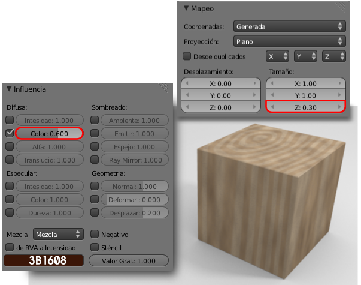

Otras texturas
De las prácticas anteriores se deduce que el abanico de posibilidades al trabajar con texturas procedurales es infinito, por lo que recomendamos experimentación. Pero antes de abandonar el tema atenderemos superficialmente a alguna más.
NUBES
Bajo este nombre en realidad lo que se ofrece es una especie de textura ruidosa usada con muchos fines. Por ejemplo en nuestra conocida textura de madera puede servir para darle un aspecto sucio o envejecido.
MÁRMOL
Fundamentalmente para crear texturas de rocas. En una columna dórica una textura Mármol le da un aspecto como este.